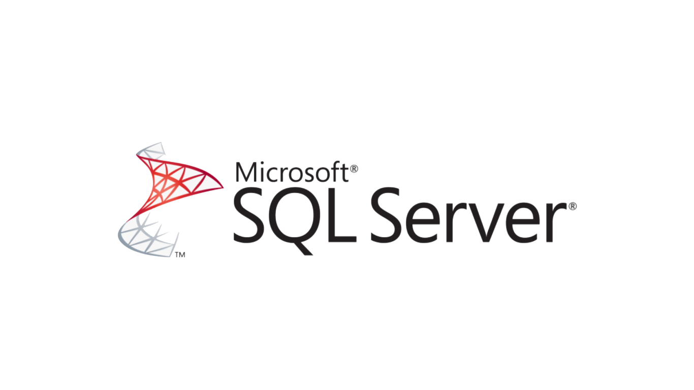
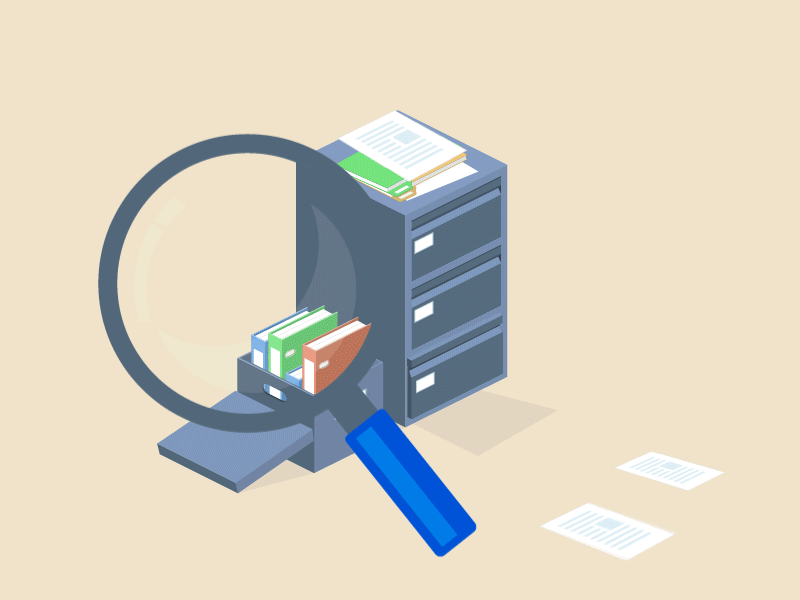

OK




Kariyerim boyunca iş akış tasarımı ve optimizasyonu ile kurumsal dijital dönüşüm süreçlerinde operasyonel verimlilik sağlamaya odaklandım. Karmaşık iş süreçlerinin eBA üzerinde modellenmesi, manuel iş yükünü azaltan dijital formların geliştirilmesi ve eBA ile SAP arasında dinamik veri aktarımı gibi kritik görevleri üstlendim. Ayrıca kurumsal firmalara yönetim ve akış sistemleri alanında danışmanlık hizmeti veriyorum.
İş akış tasarımı ve optimizasyonu ile kurumsal dijital dönüşüm süreçlerinde operasyonel verimlilik ve sistem entegrasyonu sağlandı.
Personel Bordro Takip Programı
(Tez projesi olarak geliştirilmiştir. Veritabanı mimarisi ve çalışan maaş, bordro takibi süreçlerini kapsar.)
Dokümanı İndirpusat.com.tr
Marka için modern, duyarlı ve performanslı Front-End websitesi geliştirilmesi.
Siteyi GörSüreç ve Belge Yönetimi
eBA, işletmelerin iş süreçlerini dijitalleştiren, operasyonel verimliliği maksimize eden kapsamlı bir platformdur.
Detayı Gör